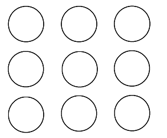
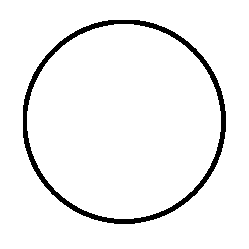
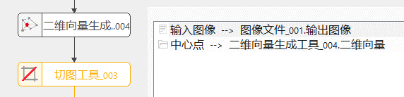
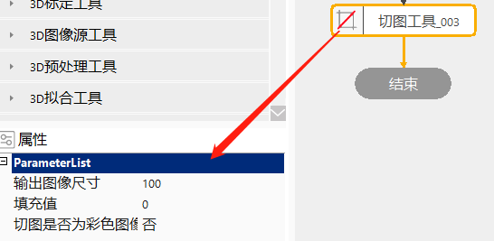
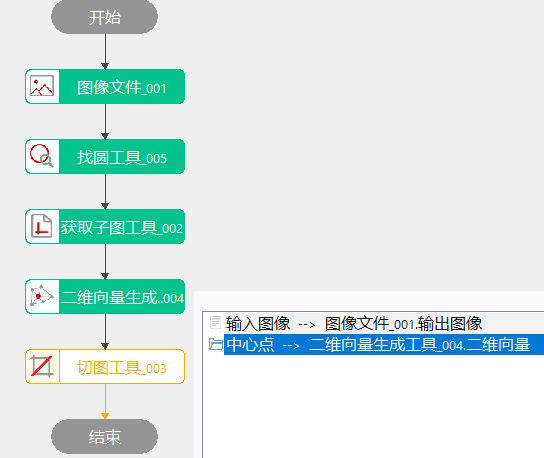
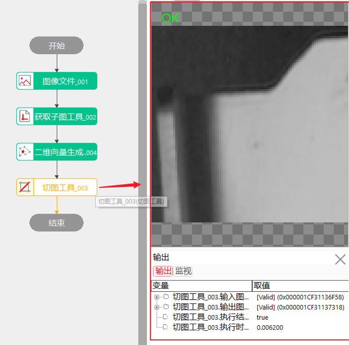

Cắt hình, hay còn gọi là cắt ảnh, là một trong các phương pháp tiền xử lý ảnh. Nó cho phép cắt ra và xuất hình ảnh từ một vùng hình chữ nhật xác định trên ảnh đầu vào, nhằm xử lý các khu vực trọng điểm của hình ảnh.
Khi cần cắt và trích xuất ảnh đầu vào, công cụ cắt hình sẽ được sử dụng. Ví dụ như hình dưới.
Ảnh đầu vào:

Ảnh kết quả:

Quá trình cắt hình dựa vào điểm trung tâm được liên kết và kích thước ảnh đầu ra, từ đó tính toán ra kích thước và vị trí vùng hình chữ nhật, rồi trích xuất vùng này từ ảnh đầu vào để tạo ảnh đầu ra.




| Mô tả hiện tượng | Phương pháp giải quyết |
|---|---|
| Dữ liệu ảnh đầu ra trống ở thanh lỗi | Kiểm tra chuỗi dữ liệu đã liên kết ảnh chưa, và dữ liệu ảnh có bình thường không |
| Ảnh kết quả bất thường | Kiểm tra chuỗi dữ liệu đã liên kết điểm trung tâm chưa; nếu đã liên kết, kiểm tra công cụ tạo điểm trung tâm có xuất đúng điểm hay không |
| Thanh lỗi báo điểm trung tâm không hợp lệ, không được vượt quá ảnh | Điểm trung tâm liên kết đã vượt ra ngoài phạm vi ảnh, kiểm tra có liên kết nhầm ảnh đầu ra không |
| Tên tham số | Mô tả |
|---|---|
| Ảnh đầu vào | Ảnh sẽ bị cắt, được liên kết từ chuỗi dữ liệu. |
| Ảnh đầu vào (RGB) | Ảnh màu sẽ bị cắt, được liên kết từ chuỗi dữ liệu. |
| Điểm trung tâm | Điểm trung tâm của vùng hình chữ nhật cần cắt, được liên kết từ chuỗi dữ liệu. |
| Kích thước ảnh đầu ra | Chiều rộng và chiều cao của vùng hình chữ nhật cần cắt. |
| Giá trị điền | Khi ảnh đầu ra lớn hơn ảnh cần cắt, phần dư sẽ được điền bằng màu có giá trị số nhập vào, phạm vi giá trị là số nguyên từ 0-255. |
| Cắt ảnh màu hay không | Có: Cắt ảnh màu; Không: Cắt ảnh không màu. |
| Tên tham số | Mô tả |
|---|---|
| Ảnh đầu vào | Kích thước ảnh đã cắt, để chuỗi dữ liệu sử dụng. |
| Ảnh đầu vào (RGB) | Ảnh màu đã cắt, để chuỗi dữ liệu sử dụng. |
| Ảnh đầu ra | Ảnh kết quả sau khi cắt. |
| Ảnh đầu ra (RGB) | Ảnh kết quả màu sau khi cắt. |
| Kết quả thực thi | Kết quả chạy của công cụ. |
| Thời gian thực thi | Thời gian chạy của công cụ. |
参见“\Samples\切图工具.gvp”。